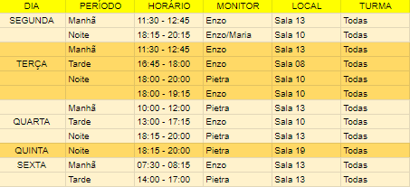
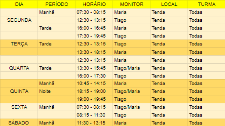
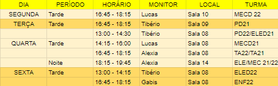
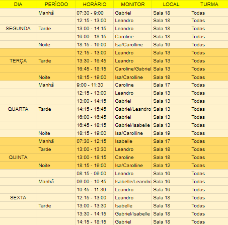
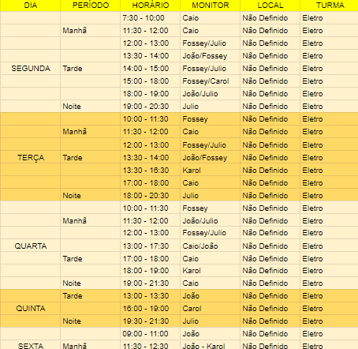
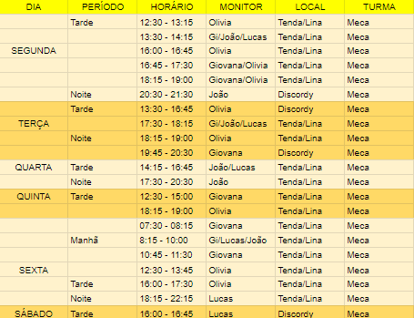
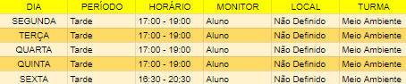
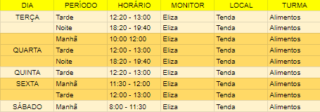
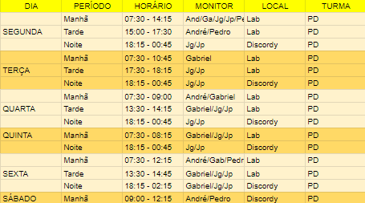

Monitoria de Biologia

Monitoria de Química

Monitoria de Física

Monitoria de Matemática

Monitoria de Eletro-Eletrônica

Monitoria de Mecatrônica

Monitoria de Meio-Ambiente

Monitoria de Alimentos

Monitoria de Informática
